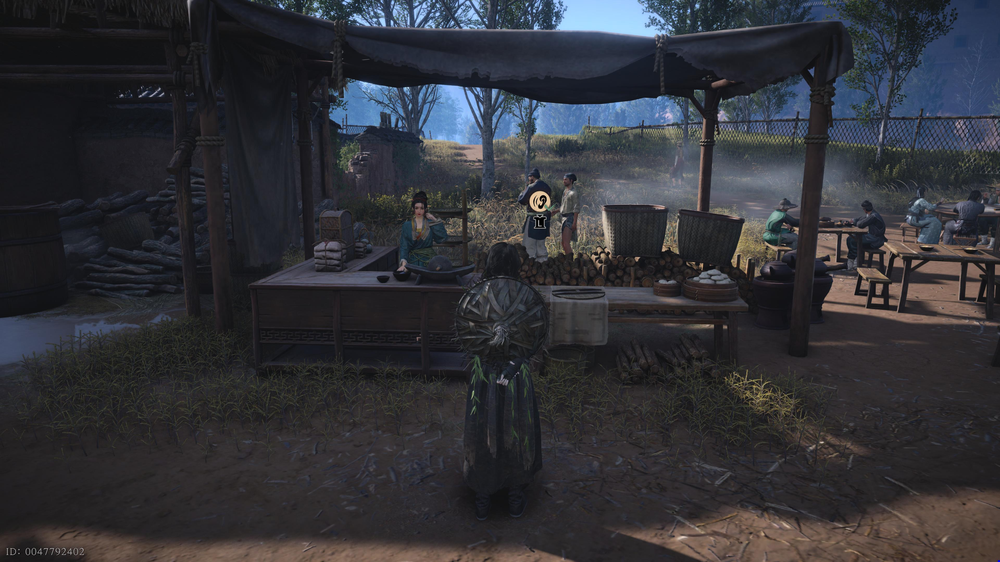
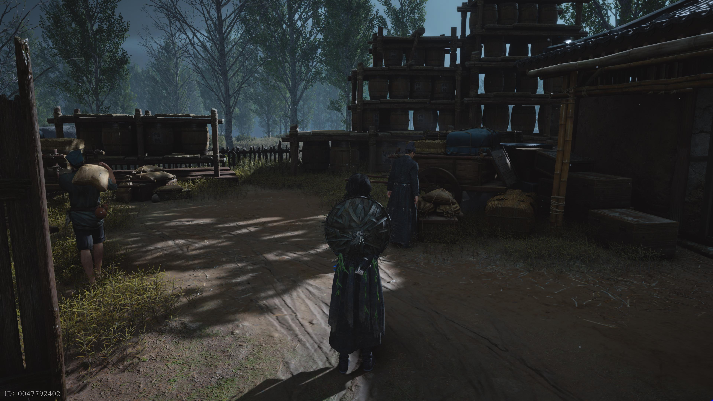
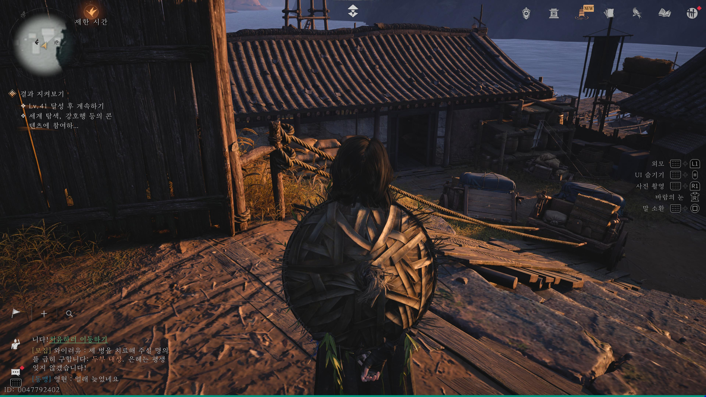
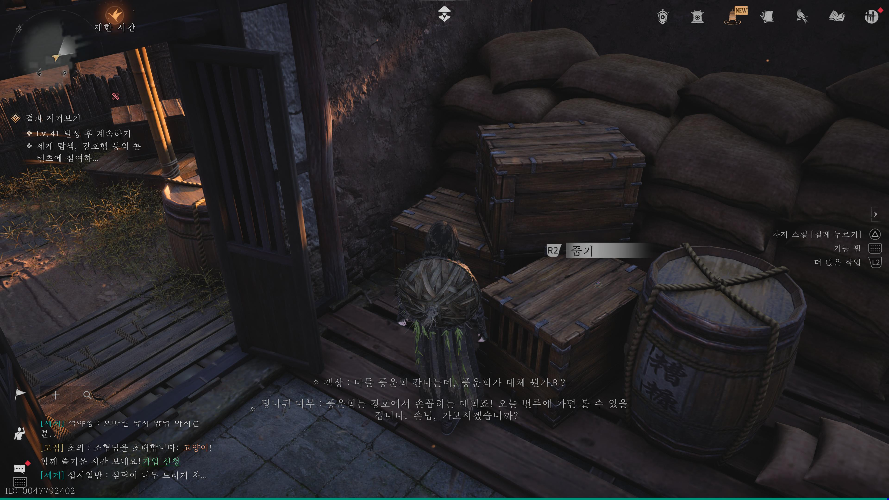

만사록
안정된 삶
화물 보관소에서 무언가 찾고 있는 유비호를 만나보자
📜 퀘스트 개요
결혼을 앞둔 유비호의 잃어버린 예물을 찾아주는 의뢰입니다.
그의 사연을 엿듣고, 진주 비녀를 찾아 전달한 뒤 약혼식에 참석해야 합니다.
사연 엿듣기
평야원 경계석 바로 앞 주막으로 이동하세요.
그곳에서 대화 중인 두 남자에게 다가가 '엿듣기'를 하면, 유비호와 육옥방의 약혼 소식을 들을 수 있습니다.

유비호의 부탁
엿듣기를 마친 후 아래 위치로 이동하면 무언가 열심히 찾고 있는 유비호를 만날 수 있습니다.
그와 대화하여 사정을 들어보세요.


진주 비녀 회수
정면에 보이는 계단의 왼쪽 집으로 들어가세요.
집 안을 조사하여 '진주 비녀'를 찾은 뒤, 유비호에게 전달하면 약혼식 초대를 받습니다.


약혼식 참석 (시간 변경)
⚠️ 필수 조건: 시간을 이틀 뒤로 변경해야 합니다.
시간을 돌린 후 다시 유비호에게 말을 걸면 행복한 결말을 맞이할 수 있습니다.
유비호의 약혼을 축하해주면
그의 안정된 삶을 응원하며
퀘스트는 완료됩니다.